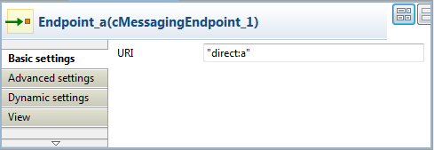
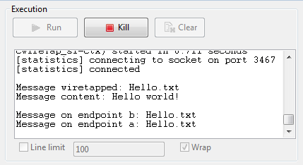

|
Component Family |
Routing | |
|
Function |
cWireTap allows you to route messages to a separate tap endpoint while it is forwarded to the ultimate destination. | |
|
Purpose |
cWireTap is used to route messages to a separate endpoint while forwarded to the ultimate destination. | |
|
Basic settings |
URI |
The endpoint URI to send the wire tapped message. |
|
|
Populate new exchange |
Select this check box to populate a new exchange of the message. |
|
|
Populate Type |
This option appears when the Populate new exchange check box is selected. The Populate Type is either Expression or Processor. |
|
|
|
Expression: Using expression allows you to set the message body of the new exchange. Language: Select the language of the expression you want to use to set the message body between Constant, Header, None, Property, Simple, XPath. Expression: Enter the expression to set the message body. |
| Processor: Using processor gives you full power to specify how the exchange is populated as you can set properties, headers and so on to the message with a piece of Java code in the Code field. | ||
| Copy the original message | Select this check box to use a copy of the exchange when wire tapping the message. This option appears when the Populate new exchange check box is selected. | |
|
Usage |
cWireTap can be a middle component in a Route. | |
|
Limitation |
n/a | |
In this scenario, a cWireTap component is used to route a message to a separate endpoint while it is routed to the ultimate destination.

From the Palette, expand the Messaging folder, and drop a cFile and two cMessagingEndpoint components onto the design workspace.
Expand the Routing folder, and drop a cWireTap component onto the design workspace.
Expand the Processor folder, and drop a cJavaDSLProcessor and two cProcessor components onto the design workspace.
Right-click the cFile component, select Row > Route from the contextual menu and click the cWireTap component.
Repeat this operation to connect the components as shown above.
Label the components to better identify their functionality.
Double-click the cFile component labeled Source to display its Basic settings view in the Component tab.

In the Path field, browse to or enter the input file path. In this use case, there is a Hello.txt file in the specified file path, which contains the content Hello World!. Leave the other parameters as they are.
Double-click the cWireTap component to display its Basic settings view in the Component tab.

Enter
"direct:a"in the URI field to route the wiretapped message to this endpoint.Select the Populate new exchange check box, select Processor as the populate type, and then enter the following code in the Code box to display the file name of the wiretapped message and its content on the console:
System.out.println("\nMessage wiretapped: "+ exchange.getIn().getHeader("CamelFileName")); System.out.println("Message content: "+ exchange.getIn().getBody(String.class)+"\n");Double-click the cJavaDSLProcessor component to display its Basic settings view in the Component tab.

In the Code field, enter the Java code
.to("direct:b")to define the URI of the endpoint to route the original message to.Double-click the cMessagingEndpoint component labeled Endpoint_a to display its Basic settings view in the Component tab. Enter
"direct:a"in the URI field to retrieve the message routed to this endpoint.Repeat this operation to set the endpoint URI for Endpoint_b.
Double-click the cProcessor component labeled Monitor_a to display its Basic settings view in the Component tab. Enter the following code in the Code box to display the file name of the message routed to Endpoint_a.
System.out.println("Message on endpoint a: "+ exchange.getIn().getHeader("CamelFileName"));
Then, configure the other cProcessor component in the same way to display the file name of the message routed to Endpoint_b.
Press Ctrl+S to save your Route.
Click the Code tab at the bottom of the design workspace to have a look at the generated code.

In this partially shown code, any message
fromthe endpointSourcewill be wiretapped by.wireTapand routed to"direct:a". The fine name and content of each wiretapped message will be displayed on the console. The original message will be routed.toan endpoint identified by the URI"direct:b", which is defined incJavaDSLProcessor_1.Click the Run view to display it and click the Run button to launch the execution of your Route. You can also press F6 to execute it.
RESULT: The source message is wiretapped and routed to endpoint a as well as being routed to endpoint b.
